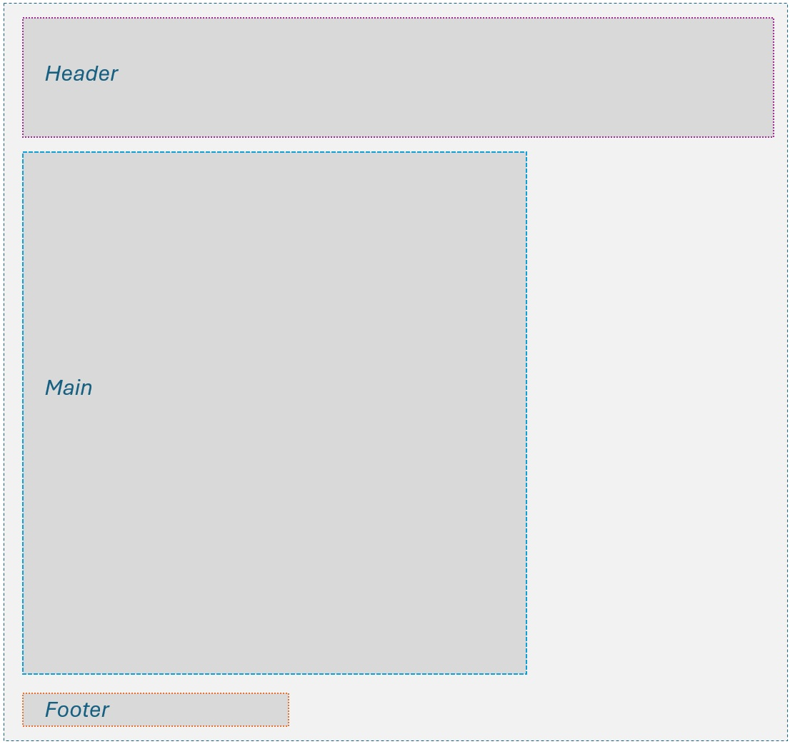

About
On this page I will I will explain what HTML elements I've used and how I decided to structure my content.
Preparation
Before I started coding, I planned out what I wanted to write and include on my website. I tried to add tags as I went, but I found it easier to add most of the tags after I had written the content (except for lists and other similar elements). I decided to make a new document for each page of the website, because it was easier to navigate in the code and to keep the content organized. Eventually I wrote down all the tags I wanted to use to make sure I included as many as possible.
Structural/semantic tags
I decided to structure my page using semantic HTML elements like <header>, <main>, and <footer> to improve accessibility. This will make it easier to navigate both the website and the code. In the header,I used a <nav> element to create a navigation menu with links to different pages of the website. The menu uses <a href=""> links. Because the header is global, it will look the same on each page, and that's why I chose to have my name displayed in the header. I also added a <hr> element to create a horizontal line that separates the header from the main content. The footer is also global, and it contains a copyright notice.
Moving on to the main content, I've used <abbr>, which marks an abbreviation, like NTNU, which displays the full name when hovered over. For my birthday, I used <sup> to make the th in 13th appear as a superscript (text that is smaller and raised above the baseline). I've also used <em> and <strong> to emphasize certain words in bold and italic, and <blockquote> to quote a character from a game. I also used <cite> to reference a book title. I used the blockquote for the longer quotation because I wanted the quotation to be separated from the main text.
For the headers, I chose to use three different heading levels (h1, h2, h3) to create a clear hierarchy and improve readability. These were further changed in the CSS file to change the font and the colour and size.
Lists and groups
I've used <ul> and <li> to create unordered lists for my hobbies, academic background, work experience, skills, and languages. I also used <span> on the portfolio page to highlight certain words in the text that described techniques or mediums. I used <span> because it is an inline element that can be used to apply styles to specific parts of the text without affecting the surrounding content. I used <address> to provide contact information in a semantically correct way. In the home page I also show how to use <div class=""> elements for the introduction. This has no purpose if you don't add any rules to the container, so I added italic font style to the intro class.
Images and CSS
I've used <img> to add images to my website. In the root folder, I created a folder called images where I stored all the images used on the website. I also added alt attributes to all images to provide alternative text for screen readers and improve accessibility. The title attribute is used to provide additional information about the image when hovered over. I also added a CSS folder to organize the styling for the website. I chose to style the website before starting just so I could easily differenciate header, main and footer content (That's why these still exist in the code, even though they are not used for styling right now, it can be useful in the future). Then I made sure to link the CSS file in the <head> section, so the styles are applied. At the top of the CSS file, I added a universal selector to set the default font for the pages. I separated the headings in three different levels to create a clear hierarchy, and changed both the font and colour. The size of the headings are written in rem and not pixels, which means they are scalable if you for example look at the website on a phone. For the footer, I added an own CSS rule because it will repeat on every page. This makes it easier to maintain and update. I did not do this for the header, because it can only style, not create reusable HTML. I also added a margin to the footer, which allows the content to be spaced from the text above. The margin was used in paragraphs as well, but only on the right side to make the text shorter on big screens. Instead of setting a pixel value, I used ch units. This means that the width will automatically shrink to fit the screen one phones.
Box model
For this paragraph, I'm explaining how the main layout of the pages look using boxes. Technically every HTML element is a box, and the box model defines the space that an element occupies on the page. It consists of four parts: the actual content in the box (text or images), the padding, the border and the margin. If not defined, the padding and margin will be set to 0, and the box will take up the whole page from left to right, but the content will only use the space it needs, for example in my headings. This is why, for the paragraphs, I added a simple CSS rule to add a margin to the right, so the text doesn't take up the whole page. I kept the browsers default spacing and borders for most elements. They didn't create any overflow or layout problems. I only adjusted the paragraphs to make it easier to read. This choice helped keep the design simple and ensured that the content also remained readable on phone screens.

References
For this website, I used w3schools as a guide for HTML and CSS, as well as the PowerPoints from the lectures. This is further explained in the txt file.